Desigo CC name mapping
When you select the checkbox Show on BACnet:
- A folder with the name and description of the chart, e.g. Supply air fan, is created in the Project tree.
- The Function type of the chart, e.g. Fan24, is written into the property Node subtype of the folder. This property is the key for Desigo CC. See the tables below.
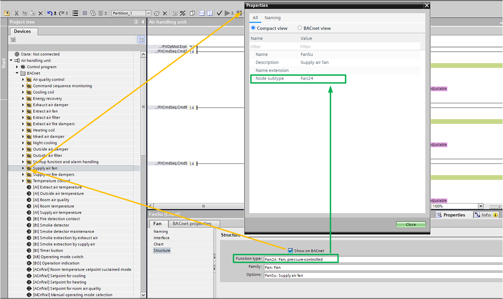
ABT Site | Desigo CC | |||||
|---|---|---|---|---|---|---|
Name (node subtype) | Description | Function name | Library name | Symbol | Symbol name | Symbol library |
AFil21 | Air filter, with filter detector | AFil21 | BA_Air_PXC_HQ_1 |
| DYN_2D_Filter_Air_AFil21_All_001 | BA_Air_PXC_HQ_1 |
AFil22 | Air filter, with filter operating message | AFil22 | BA_Air_PXC_HQ_1 | DYN_2D_Filter_Air_AFil22_All_001 | BA_Air_PXC_HQ_1 | |
AFil23 | Air filter, with differential pressure sensor and maintenance indication | AFil23 | BA_Air_PXC_HQ_1 |
| DYN_2D_Filter_Air_AFil23_All_001 | BA_Air_PXC_HQ_1 |
AQualCtr21 | Air quality controller, control of the mixed air damper and 2nd fan speed | AQualCtr21 | BA_Air_PXC_HQ_1 |
| DYN_All_Control Function_Configuration_None_All_001 | BA_HVAC_PXC_HQ_1 |
Bo21 | Boiler, 1-stage | Bo21 | BA_Heating_PXC_HQ_1 |
| DYN_All_Frame_Any Function_None_All_001 | BA_HVAC_PXC_HQ_1 |
Bo22 | Boiler, 2-stage | Bo21 | BA_Heating_PXC_HQ_1 |
| DYN_All_Frame_Any Function_None_All_001 | BA_HVAC_PXC_HQ_1 |
Bo24 | Boiler, modulating | Bo21 | BA_Heating_PXC_HQ_1 |
| DYN_All_Frame_Any Function_None_All_001 | BA_HVAC_PXC_HQ_1 |
Bo25 | Boiler, 1-stage, temperature setpoint | Bo25 | BA_Heating_PXC_HQ_1 |
| DYN_All_Frame_Any Function_None_All_001 | BA_HVAC_PXC_HQ_1 |
Bo27 | Boiler, 1-stage, modulating pump | Bo21 | BA_Heating_PXC_HQ_1 |
| DYN_All_Frame_Any Function_None_All_001 | BA_HVAC_PXC_HQ_1 |
Bo28 | Boiler, 8-stage | Bo21 | BA_Heating_PXC_HQ_1 |
| DYN_All_Frame_Any Function_None_All_001 | BA_HVAC_PXC_HQ_1 |
Bu21 | Burner interface, enable output | Bu21 | BA_Heating_PXC_HQ_1 |
| DYN_2D_Burner_None_Bu21_All_001 | BA_Heating_PXC_HQ_1 |
Bu22 | Burner interface, enable output 2-stage | Bu22 | BA_Heating_PXC_HQ_1 | DYN_2D_Burner_None_Bu22_All_001 | BA_Heating_PXC_HQ_1 | |
Bu24 | Burner interface, enable and modulating outputs | Bu24 | BA_Heating_PXC_HQ_1 |
| DYN_2D_Burner_None_Bu24_All_001 | BA_Heating_PXC_HQ_1 |
Bu25 | Burner interface, enable and setpoint outputs | Bu25 | BA_Heating_PXC_HQ_1 |
| DYN_2D_Burner_None_Bu25_All_001 | BA_Heating_PXC_HQ_1 |
Ccl21 | Chilled water cooling coil, temperature-controlled | Ccl21 | BA_Air_PXC_HQ_1 | 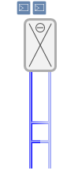 | DYN_2D_Cooling Coil_Water_None_Ccl21_Horizontal_001 | BA_Air_PXC_HQ_1 |
Ccl23 | Chilled water cooling coil, temperature-controlled, humidity-controlled | Ccl21 | BA_Air_PXC_HQ_1 | DYN_2D_Cooling Coil_Water_None_Ccl21_Horizontal_001 | BA_Air_PXC_HQ_1 | |
Cds21 | Condenser, minimum inlet temperature control | Cds21 | BA_Cooling_PXC_HQ_1 | 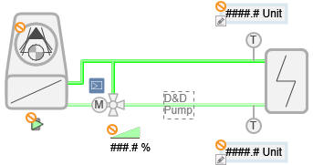 | DYN_2D_Condenser_None_Cds21_Left_001 | BA_Cooling_PXC_HQ_1 |
CenOpMod21 | Central operating mode, data exchange with rooms (TRA integration), via grouping mechanism | CenOpMod21 | BA_Room_PXC_HQ_1 | DYN_All_Button_Navigation_Group_Central_001 | Global_Base_HQ_1 | |
CenSsnCmp21 | Central seasonal compensation 21, summer/winter compensation, with central outside air temperature | CenSsnCmp21 | BA_Room_PXC_HQ_1 | DYN_All_Button_Navigation_Group_Central_001 | Global_Base_HQ_1 | |
CenWthStn21 | Central weather station 21, measurements for outside air temperature, brightness, solar radiation, wind speed, precipitation | CenWthStn21 | BA_Room_PXC_HQ_1 | DYN_All_Button_Navigation_Group_Central_001 | Global_Base_HQ_1 | |
Ch21 | Chiller, with external refrigeration circuit control | Ch21 | BA_Cooling_PXC_HQ_1 |
| DYN_All_Control Function_Configuration_None_All_001 | BA_Cooling_PXC_HQ_1 |
CmdSeqMon21 | Command sequence monitoring | CmdSeqMon21 | BA_Air_PXC_HQ_1 |
| DYN_All_Control Function_Configuration_None_All_001 | BA_HVAC_PXC_HQ_1 |
DhwCrgCrt21 | Domestic hot water, charge circuit, internal heat exchanger | DhwCrgCrt21 | BA_Water_PXC_HQ_1 |
| DYN_All_Frame_Any Function_None_All_001 | BA_HVAC_PXC_HQ_1 |
DhwCrgCrt22 | Domestic hot water, charge circuit, external heat exchanger | DhwCrgCrt21 | BA_Water_PXC_HQ_1 |
| DYN_All_Frame_Any Function_None_All_001 | BA_HVAC_PXC_HQ_1 |
DhwCrgCrt23 | Domestic hot water, charge circuit, direct domestic hot water treatment | DhwCrgCrt21 | BA_Water_PXC_HQ_1 |
| DYN_All_Frame_Any Function_None_All_001 | BA_HVAC_PXC_HQ_1 |
DhwStk21 | Domestic hot water storage tank | DhwStk21 | BA_Water_PXC_HQ_1 |
| DYN_All_Frame_Any Function_None_All_001 | BA_HVAC_PXC_HQ_1 |
Dmp21 | Damper, open/close function & 2 BI for feedback | Dmp21 | BA_Air_PXC_HQ_1 |
| DYN_2D_Damper_Air_Dmp21_All_001 | BA_Air_PXC_HQ_1 |
Dmp22 | Damper, open/close function & 2 BI for feedback only | Dmp22 | BA_Air_PXC_HQ_1 | DYN_2D_Damper_Air_Dmp22_All_001 | BA_Air_PXC_HQ_1 | |
Dmp24 | Damper, modulating control and position feedback | Dmp24 | BA_Air_PXC_HQ_1 |
| DYN_2D_Damper_Air_Dmp24_All_001 | BA_Air_PXC_HQ_1 |
Dmp29 | Damper, open/close function & MI for feedback | Dmp29 | BA_Air_PXC_HQ_1 | 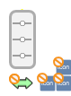 | DYN_2D_Damper_Air_Dmp29_All_001 | BA_Air_PXC_HQ_1 |
DmpMx21 | Mixed air damper, temperature-controlled | DmpMx21 | BA_Air_PXC_HQ_1 | 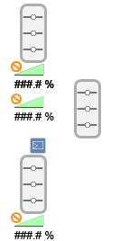 | DYN_2D_Damper_Air mixing_DmpMx21_All_001 | BA_Air_PXC_HQ_1 |
Erc21 | Energy recovery, rotary heat exchanger, temperature-controlled | Erc21 | BA_Air_PXC_HQ_1 | 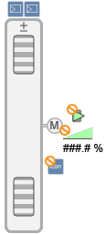 | DYN_2D_Energy recovery_None_Erc21_Central_002 | BA_Air_PXC_HQ_1 |
Erc22 | Energy recovery, plate heat exchanger, temperature-controlled | Erc22 | BA_Air_PXC_HQ_1 |
| DYN_2D_Energy recovery_None_Erc22_Central_001 | BA_Air_PXC_HQ_1 |
Erc23 | Energy recovery, run-around coil, temperature-controlled | Erc23 | BA_Air_PXC_HQ_1 | 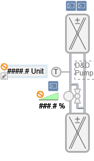 | DYN_2D_Energy recovery_None_Erc23_Central_001 | BA_Air_PXC_HQ_1 |
Evp21 | Evaporator, outlet temperature control | Evp21 | BA_Cooling_PXC_HQ_1 |
| DYN_2D_Evaporator_None_Evp21_Right_001 | BA_Cooling_PXC_HQ_1 |
Fan21 | Fan, 1-speed | Fan21 | BA_Air_PXC_HQ_1 |
| DYN_2D_Fan_Air_Fan21_All_001 | BA_Air_PXC_HQ_1 |
Fan22 | Fan, 2-speed | Fan22 | BA_Air_PXC_HQ_1 |
| DYN_2D_Fan_Air_Fan22_All_001 | BA_Air_PXC_HQ_1 |
Fan24 | Fan, pressure-controlled | Fan24 | BA_Air_PXC_HQ_1 |
| DYN_2D_Fan_Air_Fan24_All_001 | BA_Air_PXC_HQ_1 |
Fan25 | Fan, modulating control | Fan25 | BA_Air_PXC_HQ_1 |
| DYN_2D_Fan_Air_Fan25_All_001 | BA_Air_PXC_HQ_1 |
Fan26 | Fan, air volume flow-controlled | Fan26 | BA_Air_PXC_HQ_1 | 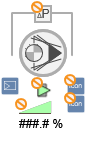 | DYN_2D_Fan_Air_Fan26_All_001 | BA_Air_PXC_HQ_1 |
Fdp21 | Fire damper, open/close function & 2 BI for feedback | Fdp21 | BA_Air_PXC_HQ_1 | 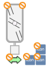 | dyn_2d_damper_fire_fdp21_all_001 | BA_Air_PXC_HQ_1 |
Fdp22 | Fire damper, open/close function & 2 BI for feedback only | Fdp22 | BA_Air_PXC_HQ_1 |
| DYN_2D_Damper_Fire_Fdp22_All_001 | BA_Air_PXC_HQ_1 |
Fdp29 | Fire damper, open/close function & MI for feedback | Fdp29 | BA_Air_PXC_HQ_1 |
| DYN_2D_Damper_Fire_Fdp29_All_001 | BA_Air_PXC_HQ_1 |
Fdp30 | Fire damper, open/close function & MI for feedback only | Fdp30 | BA_Air_PXC_HQ_1 | DYN_2D_Damper_Fire_Fdp30_All_001 | BA_Air_PXC_HQ_1 | |
FdpGrp21 | Fire damper group, 1 command and 16 dampers with feedback only | FdpGrp21 | BA_Air_PXC_HQ_1 |
| DYN_All_Frame_Any Function_None_All_001 | BA_HVAC_PXC_HQ_1 |
HCChovr21 | Heating/cooling changeover function | HCChovr21 | BA_HVAC_PXC_HQ_1 |
| DYN_All_Control Function_Configuration_None_All_001 | BA_HVAC_PXC_HQ_1 |
Hcl21 | Hot water heating coil, temperature-controlled | Hcl21 | BA_Air_PXC_HQ_1 | 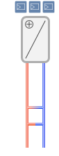 | DYN_2D_Heating Coil_Water_Hcl21_None_Horizontal_001 | BA_Air_PXC_HQ_1 |
Hcl22 | Electric heating coil, temperature-controlled | Hcl22 | BA_Air_PXC_HQ_1 |
| DYN_2D_Heating Coil_Electric_Hcl22_All_001 | BA_Air_PXC_HQ_1 |
Hcrv21 | Heating curve, flow temperature setpoint calculation, with HCRV | Hcrv21 | BA_HVAC_PXC_HQ_1 | DYN_All_Control Function_Hcrv_None_All_001 | BA_HVAC_PXC_HQ_1 | |
Hcrv22 | Heating curve, flow temperature setpoint calculation, with CHAR_LIN | Hcrv22 | BA_HVAC_PXC_HQ_1 | DYN_All_Control Function_Hcrv_None_All_001 | BA_HVAC_PXC_HQ_1 | |
Hcrv23 | Heating curve, flow temperature setpoint calculation, with CHAR | Hcrv23 | BA_HVAC_PXC_HQ_1 | DYN_All_Control Function_Hcrv_None_All_001 | BA_HVAC_PXC_HQ_1 | |
HExg21 | Heat exchanger, temperature-controlled, with primary valve and secondary pump | HExg21 | BA_Heating_PXC_HQ_1 |
| DYN_All_Frame_Any Function_None_All_001 | BA_HVAC_PXC_HQ_1 |
HuCasCtr21 | Humidity cascade controller, relative room/extract humidity and absolute supply humidity | HuCasCtr21 | BA_Air_PXC_HQ_1 |
| DYN_All_Status_HuCasCtr21_None_All_001 | BA_Air_PXC_HQ_1 |
Hum22 | Humidifier, humidity-controlled, with limitation controller | Hum22 | BA_Air_PXC_HQ_1 |
| DYN_2D_Humidifier_Electric_Hum22_Horizontal_001 | BA_Air_PXC_HQ_1 |
HuSuCtr21 | Supply humidity controller, relative supply humidity | HuSuCtr21 | BA_Air_PXC_HQ_1 | DYN_All_Status_HuSuCtr21_None_All_001 | BA_Air_PXC_HQ_1 | |
HydCrtC21 | Hydraulic circuit for cooling, flow temperature control | HydCrtC21 | BA_Cooling_PXC_HQ_1 |
| DYN_All_Control Function_Configuration_None_All_001 | BA_HVAC_PXC_HQ_1 |
HydCrtH21 | Hydraulic circuit for heating, flow temperature control | HydCrtH21 | BA_Heating_PXC_HQ_1 |
| DYN_All_Control Function_Configuration_None_All_001 | BA_HVAC_PXC_HQ_1 |
HydCrtHC21 | Hydraulic circuit for heating/cooling, flow temperature control | HydCrtHC21 | BA_HVAC_PXC_HQ_1 |
| DYN_All_Control Function_Configuration_None_All_001 | BA_HVAC_PXC_HQ_1 |
HydCrtHC31 | Hydraulic circuit for heating/cooling, Intelligent Valve, flow temperature controller | HydCrtHC31 | BA_HVAC_PXC_HQ_1 |
| DYN_All_Control Function_Configuration_None_All_001 | BA_HVAC_PXC_HQ_1 |
LglPrev21 | Legionella prevention | LglPrev21 | BA_Water_PXC_HQ_1 |
| DYN_All_Control Function_LglPrev21_None_All_001 | BA_Water_PXC_HQ_1 |
Mntn21 | Maintenance, operating hours-dependent | Mntn21 | BA_Air_PXC_HQ_1 |
| DYN_All_Control Function_Configuration_None_All_001 | BA_HVAC_PXC_HQ_1 |
NgtC21 | Night cooling, based on the operating mode in the rooms and temperature values | NgtC21 | BA_HVAC_PXC_HQ_1 |
| DYN_All_Frame_Any Function_None_All_001 | BA_HVAC_PXC_HQ_1 |
PrfDet21 | Profile determination for 2 generators, 1-stage | PrfDet21 | BA_HVAC_PXC_HQ_1 |
| DYN_All_Control Function_Configuration_None_All_001 | BA_HVAC_PXC_HQ_1 |
PrfDet22 | Profile determination for 2 generators, 2-stage | PrfDet21 | BA_HVAC_PXC_HQ_1 |
| DYN_All_Control Function_Configuration_None_All_001 | BA_HVAC_PXC_HQ_1 |
PrfDet23 | Profile determination for 2 generators, 8-stage | PrfDet21 | BA_HVAC_PXC_HQ_1 |
| DYN_All_Control Function_Configuration_None_All_001 | BA_HVAC_PXC_HQ_1 |
PrfDet24 | Profile determination for 4 generators, 1-stage | PrfDet21 | BA_HVAC_PXC_HQ_1 |
| DYN_All_Control Function_Configuration_None_All_001 | BA_HVAC_PXC_HQ_1 |
Pu21 | Pump, 1-speed | Pu21 | BA_HVAC_PXC_HQ_1 | DYN_2D_Pump_None_Pu21_All_001 | BA_HVAC_PXC_HQ_1 | |
Pu24 | Pump, pressure-controlled | Pu24 | BA_HVAC_PXC_HQ_1 |
| DYN_2D_Pump_None_Pu24_All_001 | BA_HVAC_PXC_HQ_1 |
Pu25 | Pump, modulating control | Pu25 | BA_HVAC_PXC_HQ_1 | DYN_2D_Pump_None_Pu25_All_001 | BA_HVAC_PXC_HQ_1 | |
Pu26 | Pump, temperature-controlled | Pu26 | BA_HVAC_PXC_HQ_1 |
| DYN_2D_Pump_None_Pu26_All_001 | BA_HVAC_PXC_HQ_1 |
RfCrt21 | Refrigeration circuit, external control | RfCrt21 | BA_Cooling_PXC_HQ_1 |
| DYN_2D_Chiller_None_RfCrt21_Central_001 | BA_Cooling_PXC_HQ_1 |
ScaPrt21 | Scalding protection | ScaPrt21 | BA_Water_PXC_HQ_1 |
| DYN_All_Frame_Any Function_None_All_001 | BA_HVAC_PXC_HQ_1 |
SplyAir21 | Supply chain air, data exchange with rooms (TRA integration), via grouping mechanism | SplyAir21 | BA_Room_PXC_HQ_1 | DYN_All_Button_Navigation_Group_Central_001 | Global_Base_HQ_1 | |
SplyChw21 | Supply chain chilled water, data exchange with rooms (TRA integration), via grouping mechanism | SplyChw21 | BA_Room_PXC_HQ_1 | DYN_All_Button_Navigation_Group_Central_001 | Global_Base_HQ_1 | |
SplyChw22 | Supply chain chilled water, data exchange with other plants, with valve position evaluation | SplyChw22 | BA_Cooling_PXC_HQ_1 | DYN_All_Button_Navigation_Group_Central_001 | Global_Base_HQ_1 | |
SplyChw23 | Supply chain chilled water, data exchange with other plants, with setpoint evaluation of chilled water demand | SplyChw23 | BA_Cooling_PXC_HQ_1 | DYN_All_Button_Navigation_Group_Central_001 | Global_Base_HQ_1 | |
SplyHw21 | Supply chain hot water, data exchange with rooms (TRA integration), via grouping mechanism | SplyHw21 | BA_Room_PXC_HQ_1 | DYN_All_Button_Navigation_Group_Central_001 | Global_Base_HQ_1 | |
SplyHw22 | Supply chain hot water, data exchange with other plants, with valve position evaluation, heating curve | SplyHw22 | BA_Heating_PXC_HQ_1 | DYN_All_Button_Navigation_Group_Central_001 | Global_Base_HQ_1 | |
SplyHw23 | Supply chain hot water, data exchange with other plants, with setpoint evaluation of hot water demand | SplyHw23 | BA_Heating_PXC_HQ_1 | DYN_All_Button_Navigation_Group_Central_001 | Global_Base_HQ_1 | |
StepUpDn21 | Step up/down, temperature deviation integral criterion | StepUpDn21 | BA_HVAC_PXC_HQ_1 |
| DYN_All_Control Function_Configuration_None_All_001 | BA_HVAC_PXC_HQ_1 |
StepUpDn22 | Step up/down, temperature deviation with delay | StepUpDn21 | BA_HVAC_PXC_HQ_1 |
| DYN_All_Control Function_Configuration_None_All_001 | BA_HVAC_PXC_HQ_1 |
SttUpAlmHdl21 | Startup function and alarm handling, with startup and plant delay, automatic acknowledge and reset, with inputs and outputs | SttUpAlmHdl21 | BA_HVAC_PXC_HQ_1 |
| DYN_2D_Status_SttUpAlmHdl21_All_001 | BA_HVAC_PXC_HQ_1 |
SttUpAlmHdl21a | Startup function and alarm handling, with startup and plant delay, automatic acknowledge and reset, without inputs and outputs | SttUpAlmHdl21 | BA_HVAC_PXC_HQ_1 |
| DYN_2D_Status_SttUpAlmHdl21_All_001 | BA_HVAC_PXC_HQ_1 |
TCasCtr21 | Temperature cascade controller, supply air setpoint high/low and for energy recovery | TCasCtr21 | BA_Air_PXC_HQ_1 |
| DYN_All_Status_TCasCtr21_None_All_001 | BA_Air_PXC_HQ_1 |
TSuCtr21 | Supply air temperature controller | TSuCtr21 | BA_Air_PXC_HQ_1 |
| DYN_All_Status_TCasCtr21_None_All_001 | BA_Air_PXC_HQ_1 |
TwnPu21 | Twin pump, 1-speed | TwnPu21 | BA_HVAC_PXC_HQ_1 |
| DYN_2D_Pump_None_TwnPu21_All_001 | BA_HVAC_PXC_HQ_1 |
TwnPu24 | Twin pump, pressure-controlled | TwnPu24 | BA_HVAC_PXC_HQ_1 | 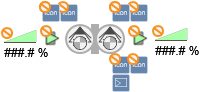 | DYN_2D_Pump_None_TwnPu24_All_001 | BA_HVAC_PXC_HQ_1 |
TwnPu25 | Twin pump, modulating control | TwnPu25 | BA_HVAC_PXC_HQ_1 |
| DYN_2D_Pump_None_TwnPu25_All_001 | BA_HVAC_PXC_HQ_1 |
Vlv21 | Valve, open/close function & 2 BI for feedback | Vlv21 | BA_HVAC_PXC_HQ_1 | DYN_2D_Valve_None_Vlv21_All_001 | BA_HVAC_PXC_HQ_1 | |
Vlv24 | Valve, modulating control & position feedback | Vlv24 | BA_HVAC_PXC_HQ_1 |
| DYN_2D_Valve_None_Vlv24_All_001 | BA_HVAC_PXC_HQ_1 |
Vlv29 | Valve, open/close function & MI for feedback | Vlv29 | BA_HVAC_PXC_HQ_1 | DYN_2D_Valve_None_Vlv29_All_001 | BA_HVAC_PXC_HQ_1 | |
Vlv31 | Valve, Intelligent Valve, dynamic control valve | Vlv31 | BA_HVAC_PXC_HQ_1 |
| DYN_2D_Valve_None_Vlv31_All_001 | BA_HVAC_PXC_HQ_1 |